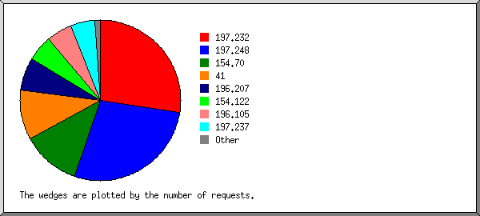
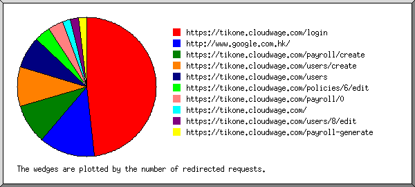
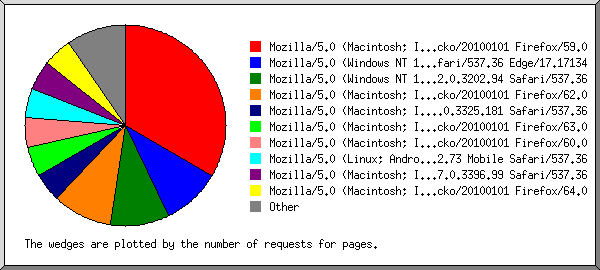
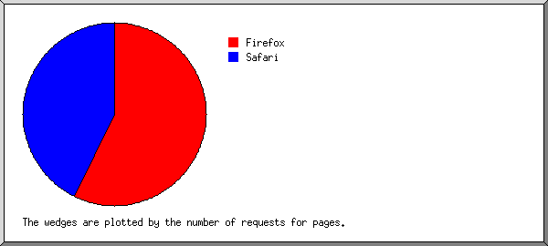
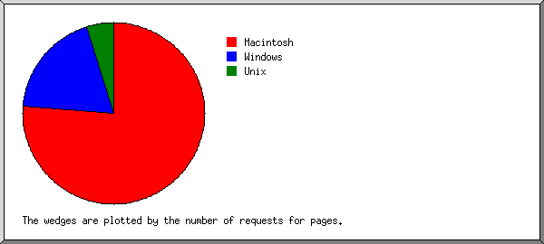
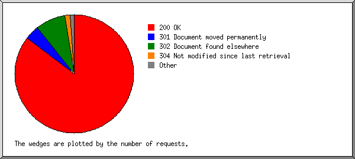
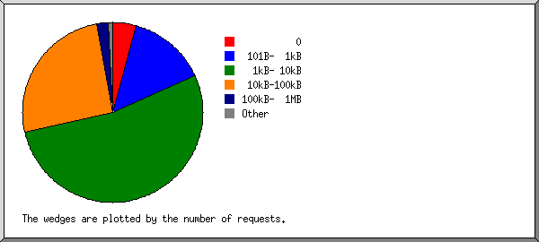
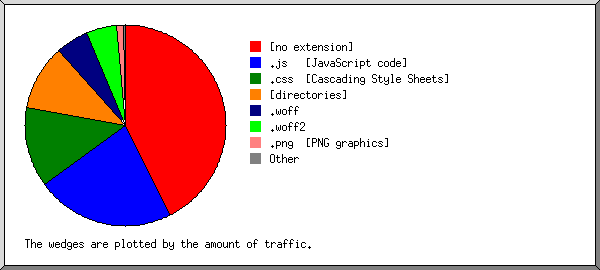
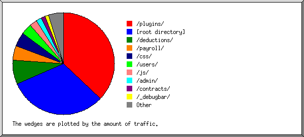
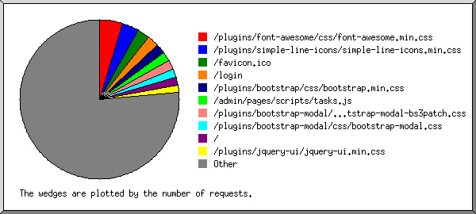

Web Server Statistics for tikone.cloudwage.com
Web Server Statistics for tikone.cloudwage.com
Program started on Sun, Aug 12 2018 at 3:06 PM.
Analyzed requests from Sat, Nov 04 2017 at 4:34 PM to Sat, Aug 11 2018 at 7:06 PM (280.11 days).
Web Server Statistics for tikone.cloudwage.comProgram started on Sun, Aug 12 2018 at 3:06 PM.
Analyzed requests from Sat, Nov 04 2017 at 4:34 PM to Sat, Aug 11 2018 at 7:06 PM (280.11 days).
(Go To: Top | General Summary | Monthly Report | Daily Summary | Hourly Summary | Domain Report | Organization Report | Redirected Referrer Report | Referring Site Report | Browser Report | Browser Summary | Operating System Report | Status Code Report | File Size Report | File Type Report | Directory Report | Request Report)
Figures in parentheses refer to the 7-day period ending Aug 12 2018 at 3:06 PM.
Successful requests: 739 (68)
Average successful requests per day: 2 (9)
Successful requests for pages: 13 (1)
Redirected requests: 104 (2)
Distinct files requested: 99 (115)
Distinct hosts served: 7 (71)
Data transferred: 9.64 megabytes (887.78 kilobytes)
Average data transferred per day: 35.24 kilobytes (126.83 kilobytes)
(Go To: Top | General Summary | Monthly Report | Daily Summary | Hourly Summary | Domain Report | Organization Report | Redirected Referrer Report | Referring Site Report | Browser Report | Browser Summary | Operating System Report | Status Code Report | File Size Report | File Type Report | Directory Report | Request Report)
Each unit ( ) represents 1 request for a page.
) represents 1 request for a page.
| month | #reqs | #pages | |
|---|---|---|---|
| Nov 2017 | 166 | 2 |  |
| Dec 2017 | 66 | 1 | |
| Jan 2018 | 0 | 0 | |
| Feb 2018 | 0 | 0 | |
| Mar 2018 | 0 | 0 | |
| Apr 2018 | 308 | 7 |  |
| May 2018 | 63 | 1 | |
| Jun 2018 | 67 | 1 | |
| Jul 2018 | 1 | 0 | |
| Aug 2018 | 68 | 1 | |
Busiest month: Apr 2018 (7 requests for pages).
(Go To: Top | General Summary | Monthly Report | Daily Summary | Hourly Summary | Domain Report | Organization Report | Redirected Referrer Report | Referring Site Report | Browser Report | Browser Summary | Operating System Report | Status Code Report | File Size Report | File Type Report | Directory Report | Request Report)
Each unit () represents 1 request for a page.
| day | #reqs | #pages | |
|---|---|---|---|
| Sun | 0 | 0 | |
| Mon | 308 | 7 | |
| Tue | 0 | 0 | |
| Wed | 161 | 2 | |
| Thu | 68 | 1 | |
| Fri | 64 | 1 | |
| Sat | 138 | 2 | |
(Go To: Top | General Summary | Monthly Report | Daily Summary | Hourly Summary | Domain Report | Organization Report | Redirected Referrer Report | Referring Site Report | Browser Report | Browser Summary | Operating System Report | Status Code Report | File Size Report | File Type Report | Directory Report | Request Report)
Each unit () represents 1 request for a page.
| hour | #reqs | #pages | |
|---|---|---|---|
| 0 | 0 | 0 | |
| 1 | 0 | 0 | |
| 2 | 0 | 0 | |
| 3 | 0 | 0 | |
| 4 | 0 | 0 | |
| 5 | 2 | 0 | |
| 6 | 0 | 0 | |
| 7 | 0 | 0 | |
| 8 | 0 | 0 | |
| 9 | 68 | 1 | |
| 10 | 0 | 0 | |
| 11 | 63 | 1 | |
| 12 | 155 | 3 | |
| 13 | 0 | 0 | |
| 14 | 126 | 2 | |
| 15 | 118 | 2 | |
| 16 | 139 | 3 | |
| 17 | 67 | 1 | |
| 18 | 0 | 0 | |
| 19 | 0 | 0 | |
| 20 | 1 | 0 | |
| 21 | 0 | 0 | |
| 22 | 0 | 0 | |
| 23 | 0 | 0 |
(Go To: Top | General Summary | Monthly Report | Daily Summary | Hourly Summary | Domain Report | Organization Report | Redirected Referrer Report | Referring Site Report | Browser Report | Browser Summary | Operating System Report | Status Code Report | File Size Report | File Type Report | Directory Report | Request Report)
Listing domains, sorted by the amount of traffic.
| #reqs | %bytes | domain |
|---|---|---|
| 739 | 100% | [unresolved numerical addresses] |
(Go To: Top | General Summary | Monthly Report | Daily Summary | Hourly Summary | Domain Report | Organization Report | Redirected Referrer Report | Referring Site Report | Browser Report | Browser Summary | Operating System Report | Status Code Report | File Size Report | File Type Report | Directory Report | Request Report)

Listing organizations, sorted by the number of requests.
| #reqs | %bytes | organization |
|---|---|---|
| 370 | 48.71% | 197.232 |
| 160 | 24.93% | 154.70 |
| 70 | 8.90% | 154.122 |
| 68 | 8.40% | 41 |
| 68 | 9.00% | 197.237 |
| 2 | 178.255 | |
| 1 | 0.07% | 122 |
(Go To: Top | General Summary | Monthly Report | Daily Summary | Hourly Summary | Domain Report | Organization Report | Redirected Referrer Report | Referring Site Report | Browser Report | Browser Summary | Operating System Report | Status Code Report | File Size Report | File Type Report | Directory Report | Request Report)

Listing referring URLs, sorted by the number of redirected requests.
(Go To: Top | General Summary | Monthly Report | Daily Summary | Hourly Summary | Domain Report | Organization Report | Redirected Referrer Report | Referring Site Report | Browser Report | Browser Summary | Operating System Report | Status Code Report | File Size Report | File Type Report | Directory Report | Request Report)
Listing referring sites, sorted by the number of requests.
| #reqs | site |
|---|---|
| 722 | https://tikone.cloudwage.com/ |
(Go To: Top | General Summary | Monthly Report | Daily Summary | Hourly Summary | Domain Report | Organization Report | Redirected Referrer Report | Referring Site Report | Browser Report | Browser Summary | Operating System Report | Status Code Report | File Size Report | File Type Report | Directory Report | Request Report)

Listing browsers with at least 1 request for a page, sorted by the number of requests for pages.
| #reqs | #pages | browser |
|---|---|---|
| 303 | 7 | Mozilla/5.0 (Macintosh; Intel Mac OS X 10.13; rv:59.0) Gecko/20100101 Firefox/59.0 |
| 160 | 2 | Mozilla/5.0 (Windows NT 10.0; Win64; x64) AppleWebKit/537.36 (KHTML, like Gecko) Chrome/62.0.3202.94 Safari/537.36 |
| 68 | 1 | Mozilla/5.0 (Macintosh; Intel Mac OS X 10_13_6) AppleWebKit/537.36 (KHTML, like Gecko) Chrome/67.0.3396.99 Safari/537.36 |
| 68 | 1 | Mozilla/5.0 (Macintosh; Intel Mac OS X 10_13_4) AppleWebKit/537.36 (KHTML, like Gecko) Chrome/65.0.3325.181 Safari/537.36 |
| 67 | 1 | Mozilla/5.0 (Macintosh; Intel Mac OS X 10.13; rv:60.0) Gecko/20100101 Firefox/60.0 |
| 70 | 1 | Mozilla/5.0 (Linux; Android 7.0; HUAWEI VNS-L31 Build/HUAWEIVNS-L31) AppleWebKit/537.36 (KHTML, like Gecko) Chrome/62.0.3202.73 Mobile Safari/537.36 |
| 3 | 0 | [not listed: 2 browsers] |
(Go To: Top | General Summary | Monthly Report | Daily Summary | Hourly Summary | Domain Report | Organization Report | Redirected Referrer Report | Referring Site Report | Browser Report | Browser Summary | Operating System Report | Status Code Report | File Size Report | File Type Report | Directory Report | Request Report)

Listing browsers with at least 1 request for a page, sorted by the number of requests for pages.
| # | #reqs | #pages | browser |
|---|---|---|---|
| 1 | 371 | 8 | Firefox |
| 303 | 7 | Firefox/59 | |
| 67 | 1 | Firefox/60 | |
| 2 | 366 | 5 | Safari |
| 366 | 5 | Safari/537 | |
| 2 | 0 | [not listed: 1 browser] |
(Go To: Top | General Summary | Monthly Report | Daily Summary | Hourly Summary | Domain Report | Organization Report | Redirected Referrer Report | Referring Site Report | Browser Report | Browser Summary | Operating System Report | Status Code Report | File Size Report | File Type Report | Directory Report | Request Report)

Listing operating systems, sorted by the number of requests for pages.
| # | #reqs | #pages | OS |
|---|---|---|---|
| 1 | 507 | 10 | Macintosh |
| 2 | 160 | 2 | Windows |
| 160 | 2 | Windows NT | |
| 3 | 70 | 1 | Unix |
| 70 | 1 | Linux | |
| 4 | 2 | 0 | OS unknown |
(Go To: Top | General Summary | Monthly Report | Daily Summary | Hourly Summary | Domain Report | Organization Report | Redirected Referrer Report | Referring Site Report | Browser Report | Browser Summary | Operating System Report | Status Code Report | File Size Report | File Type Report | Directory Report | Request Report)

Listing status codes, sorted numerically.
| #reqs | status code |
|---|---|
| 715 | 200 OK |
| 2 | 206 Partial content |
| 19 | 301 Document moved permanently |
| 85 | 302 Document found elsewhere |
| 22 | 304 Not modified since last retrieval |
(Go To: Top | General Summary | Monthly Report | Daily Summary | Hourly Summary | Domain Report | Organization Report | Redirected Referrer Report | Referring Site Report | Browser Report | Browser Summary | Operating System Report | Status Code Report | File Size Report | File Type Report | Directory Report | Request Report)

| size | #reqs | %bytes |
|---|---|---|
| 0 | 32 | |
| 1B- 10B | 1 | |
| 11B- 100B | 0 | |
| 101B- 1kB | 108 | 0.51% |
| 1kB- 10kB | 390 | 14.64% |
| 10kB-100kB | 199 | 75.50% |
| 100kB- 1MB | 9 | 9.35% |
(Go To: Top | General Summary | Monthly Report | Daily Summary | Hourly Summary | Domain Report | Organization Report | Redirected Referrer Report | Referring Site Report | Browser Report | Browser Summary | Operating System Report | Status Code Report | File Size Report | File Type Report | Directory Report | Request Report)

Listing extensions with at least 0.1% of the traffic, sorted by the amount of traffic.
| #reqs | %bytes | extension |
|---|---|---|
| 103 | 36.94% | [no extension] |
| 259 | 22.29% | .js [JavaScript code] |
| 285 | 14.12% | .css [Cascading Style Sheets] |
| 13 | 13.16% | [directories] |
| 12 | 6.13% | .woff |
| 10 | 5.62% | .woff2 |
| 46 | 1.38% | .png [PNG graphics] |
| 1 | 0.35% | .ttf |
| 10 | [not listed: 2 extensions] |
(Go To: Top | General Summary | Monthly Report | Daily Summary | Hourly Summary | Domain Report | Organization Report | Redirected Referrer Report | Referring Site Report | Browser Report | Browser Summary | Operating System Report | Status Code Report | File Size Report | File Type Report | Directory Report | Request Report)

Listing directories with at least 0.01% of the traffic, sorted by the amount of traffic.
| #reqs | %bytes | directory |
|---|---|---|
| 437 | 40.02% | /plugins/ |
| 81 | 34.69% | [root directory] |
| 11 | 6.69% | /users/ |
| 13 | 4.58% | /payroll/ |
| 34 | 4.38% | /css/ |
| 18 | 2.57% | /js/ |
| 98 | 1.80% | /admin/ |
| 11 | 1.24% | /images/ |
| 3 | 1.02% | /policies/ |
| 4 | 0.71% | /payroll-pdf/ |
| 2 | 0.69% | /loans/ |
| 9 | 0.66% | /scripts/ |
| 1 | 0.49% | /employees/ |
| 17 | 0.46% | /img/ |
(Go To: Top | General Summary | Monthly Report | Daily Summary | Hourly Summary | Domain Report | Organization Report | Redirected Referrer Report | Referring Site Report | Browser Report | Browser Summary | Operating System Report | Status Code Report | File Size Report | File Type Report | Directory Report | Request Report)

Listing files with at least 20 requests, sorted by the number of requests.
| #reqs | %bytes | last time | file |
|---|---|---|---|
| 38 | 2.05% | Aug/ 6/18 3:09 PM | /plugins/font-awesome/css/font-awesome.min.css |
| 26 | 0.56% | Aug/ 6/18 3:09 PM | /plugins/simple-line-icons/simple-line-icons.min.css |
| 675 | 97.40% | Aug/ 6/18 3:10 PM | [not listed: 91 files] |